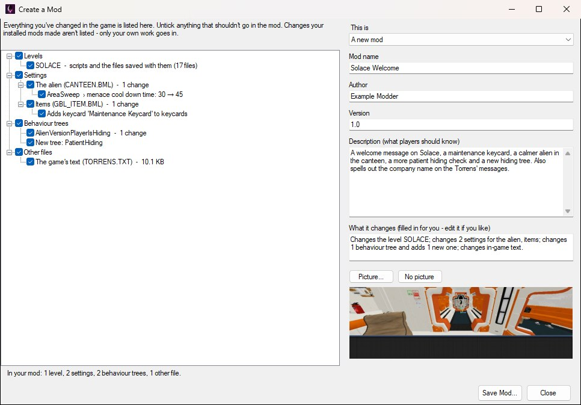

Anything you change in the game with OpenCAGE - a level's scripts, its models and textures, the alien's settings, behaviour trees, in-game text and more - can be turned into a mod that other players install with the Mod Manager.
There's nothing special to do while you work: make your changes in OpenCAGE as you normally would. OpenCAGE keeps a copy of each game file's original version the first time it changes it, so it always knows exactly what you changed. When you're happy, Create a Mod packs those changes into a single .omp file.
Mods made this way hold only what you changed, so they're small, and the Mod Manager can combine them with other players' mods - even ones that change the same level or the same settings.
Open the Mod Manager from the toolbar and click Create a Mod... at the bottom of it. Save any level you have open first, so your latest changes are included.

The left of the window lists everything that's different from the original game, in plain words:
ANIMATION.PAK) take the layouts you gave them in the Animation Tree Editor with them.Everything starts ticked. Untick anything that shouldn't be in this mod. If you have mods installed, what they changed isn't listed - only your own work goes into your mod.
The line at the bottom of the window counts what's ticked, for example In your mod: 1 level, 2 settings, 2 behaviour trees, 1 other file.
On the right, fill in what players see in their Mod Manager:
Click Save Mod..., choose where to save it, and you're done.
To release an update, make your changes, open Create a Mod... again, and choose A new version of 'your mod' from the This is list at the top right. Your mod's details are filled in again and its version number goes up by one (change it if you like).
Players who add the new version get it in place of the old one, in the same spot in their list, rather than as a second copy. A mod is only offered here once it's in your own Mod Manager's list - add your earlier version to it if it isn't.
Your mod is the one .omp file you saved. Share it however you like. Anyone with OpenCAGE can install it by adding it to their Mod Manager, dragging it onto the Mod Manager, or double-clicking it - see Installing Mods.
A mod works on the version of the game it was made with: mods made with the PC version (Steam, Epic Games Store or GOG) install on any PC copy, but not on other versions of the game.
Players often install lots of mods at once. The Mod Manager is built for that: it combines every installed mod's changes, and only has to choose between two mods when they change exactly the same thing.
When more than one installed mod changes the same file, the Mod Manager looks at what each mod changed inside it compared to the original game, and keeps all of it:
| What the mods change | Combined |
|---|---|
| Settings (alien, characters, weapons, difficulty, items and the other config files) | Setting by setting, including entries added to or removed from lists |
| Behaviour trees | Node by node, including whole new trees |
Animation tree layouts (how the Animation Tree Editor draws each tree, kept inside ANIMATION.PAK with the trees) | Tree by tree, each from the latest mod (or the player's own layouts) made for the version of that tree that's installed. A layout made for another version is left out, and that tree is laid out automatically |
| In-game text | String by string |
| The user interface and other packed files | File by file inside the pack |
| Other text and XML files | Line by line, or element by element |
| A level | Composite by composite and entity by entity - every parameter, link, alias, proxy, trigger sequence and keyframe - plus textures and models replaced by name, and new composites with everything they use. The level is then rebuilt with all of it (navigation, collision and lighting included), along with its flowgraph pages. |
| A level that isn't in the original game | Can't be combined: if two mods add a level with the same name, the one lower in the list is used |
| Any other kind of file | Can't be combined: the version from the mod lower in the list is used |
Where two mods change the very same thing - the same setting, the same parameter on the same entity - the mod lower in the player's list wins, and the Mod Manager tells them which mod's version was used.
An example. Two mods both edit the same composite - say the room composite a cutscene plays in. Mod A adds a light and links it to the cutscene's start. Mod B changes how long the cutscene's camera takes to blend in, and adds some debug text. With both installed, the composite has A's light and its link, B's new timing and B's text: each mod's changes are carried over entity by entity, and parameter by parameter within an entity. Only if both mods changed that same camera's blend time would one of them win - the lower one - and the player would be told. The composite's flowgraph pages are combined too, so it still opens with every change drawn.
Deleting things. If one mod deletes an entity that another mod changes, the mod lower in the list wins again: a deletion lower down removes it, a change lower down brings it back as that mod has it - and either way the player is told. Links to something that's gone are dropped. A composite that one mod deletes but another mod still uses is kept, so the level is never left using a composite that isn't there.
To see how your mod gets on with others, add it and the mods you want to try it with to your Mod Manager, tick them all, and click Apply. Before anything changes, the Mod Manager lists every clash between them, so you can see straight away whether your mod and another change the same thing.
Your own copy of the game already holds your changes, so for a true test, untick every mod and click Apply to get back to the original game first - see Your Own Changes for how your own work is kept alongside mods.
For the curious, and for tool makers:
WORLD/BEHAVIOR_TREE.DB, from the character configs), the game's list of extra levels (DATA/PACKAGES/MAIN.PKG), and COMMANDS.BIN (which only the game's development builds read).DATA/MODTOOLS/MODS.